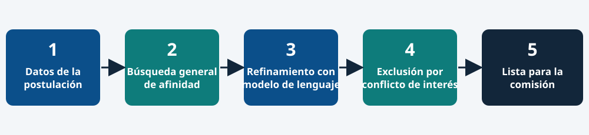

Infografía interactiva: cómo funciona el sistema
El sistema de recomendación que usan las comisiones de la CICyT sigue cinco pasos. Hacé clic en cada uno para ver el detalle.

Los cinco pasos
Datos de la postulación
El sistema toma el plan de trabajo y los antecedentes de la persona que se postula, registrados en SIGEVA.
Búsqueda general de afinidad
Hace una comparación rápida de similitud semántica entre el perfil de la postulación y la producción de los especialistas del Banco de Pares Consultores.
Refinamiento con modelo de lenguaje
En una segunda etapa se analiza con más detalle el texto de las publicaciones para precisar qué tan bien se corresponden con la propuesta. Según la cobertura de Cadena 3 (2026), esta etapa usa un modelo de lenguaje.
Exclusión por conflicto de interés
El sistema aplica reglas para excluir a posibles evaluadores con incompatibilidades, por ejemplo directores, coautores o quienes trabajan en el mismo lugar.
Lista preseleccionada para la comisión
Las comisiones asesoras reciben un conjunto de especialistas con la mejor afinidad para cada postulación. La herramienta no decide: ofrece un insumo de apoyo y la elección sigue siendo humana.